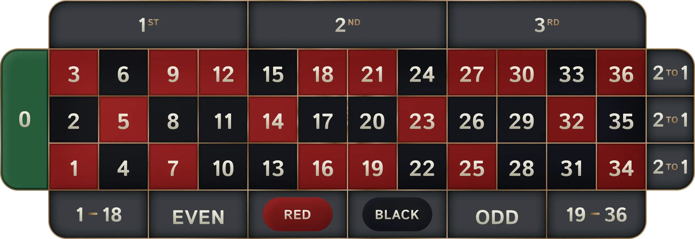

Purpose: Compare visual quality and detail between SVG and WebP formats
Files: Grid.svg (253 KB) vs Grid.webp (156 KB)
Vector Graphics
Infinite Scaling
Complex XML
Raster Graphics
GPU Accelerated
38% Smaller
Instructions:
• Drag the center slider left/right to compare image details
• Left side shows SVG format (253 KB)
• Right side shows WebP format (156 KB)
• Zoom in your browser to inspect fine details
• Both images have white background to prevent transparency color mixing
Key Observations:
• SVG maintains sharpness when scaled (vector nature)
• WebP provides comparable visual quality at original size
• WebP file size is 38% smaller than SVG (253 KB vs 156 KB)
• WebP uses GPU hardware acceleration, SVG uses CPU
• SVG contains complex filters and effects - causing significant bloat
| Aspect | WebP | SVG |
|---|---|---|
| File Size | 25-34% smaller than JPEG/PNG | Smaller for simple vectors |
| Scalability | Fixed resolution | Infinite scaling |
| Rendering | Hardware-accelerated | CPU-bound, not GPU-accelerated |
| Browser Support (2025) | Universal | Universal (with limitations) |
| Animation | Smooth, frame-based | Interactive, CSS/JS-based |
• Large SVG → TSX conversion increases JavaScript burden
• Heavy JSX processing on each render
• Solution: Use external SVG files, not inline JSX
| File | Size | Format | Size Difference |
|---|---|---|---|
Grid.webp |
156 KB | Raster (WebP) | Baseline |
Grid.svg |
253 KB | Vector (SVG) | +62% larger |
Analysis of Grid.svg reveals extreme complexity:
| Category | Count | Impact |
|---|---|---|
| Total Lines | 1,669 | Large XML parsing overhead |
| Color Matrices | 256 | Heavy CPU processing |
| Blend Modes | 171 | Complex compositing |
| Gaussian Blurs | 127 | Expensive filter effects |
| Offset Effects | 128 | Additional rendering passes |
| Linear Gradients | 66 | Complex rendering calculations |
| Gradient Stops | 140 | Color interpolation overhead |
| Rectangles | 178 | Shape elements |
| Paths | 96 | Complex vector calculations |
| Clip Paths | 47 | Additional rendering passes |
| Masks | 3 | Compositing layers |
| Metric | Grid.webp (156 KB) | Grid.svg (253 KB) |
|---|---|---|
| Download Time | Baseline | 1.6x slower |
| Parsing Time | Instant binary decode | Parse complex XML structure |
| Rendering Method | GPU hardware-accelerated | CPU rasterization (no GPU) |
| Memory Usage | Low (single texture) | High (DOM tree + complex elements) |
| Browser Optimization | Optimized decoder routines | Limited SVG optimization |
The assumption that "SVG is lightweight and performant" only applies to:
This case study demonstrates SVG bloat when:
When exporting from Figma to SVG, avoid these effects:
| Effect | Issue | Alternative |
|---|---|---|
| SMIL Animations | Safari doesn't support | CSS animations / JavaScript |
| Blur Effects | Limited Safari support | CSS filter or use WebP |
| Drop Shadows | Performance issues | CSS box-shadow or WebP |
| Mask-type: alpha | Unstable in Safari | Simple clip-path or raster |
| paint-order | Safari compatibility | Default order or split layers |
| Blend Modes | Performance overhead | Use WebP for complex blending |
For web games:
Key Takeaway: Choose the format based on content complexity, not assumptions. Complex designs with gradients and effects are often better served by WebP despite SVG's vector benefits.